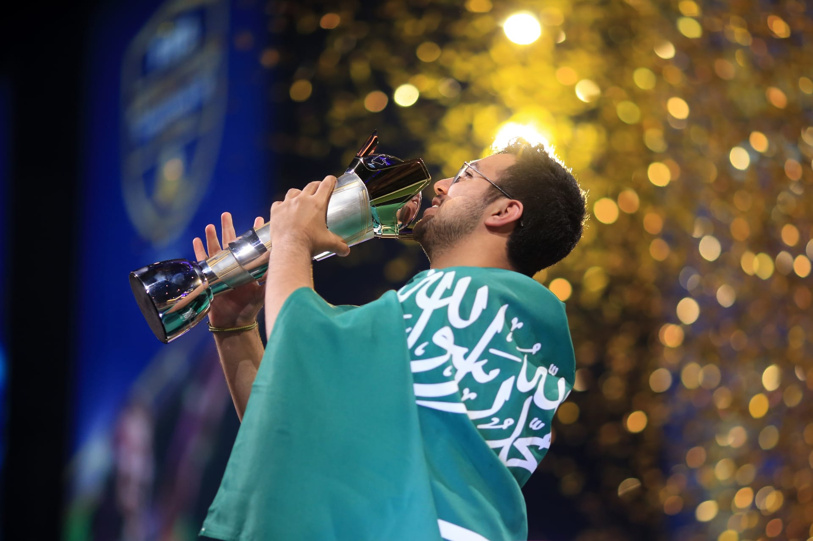
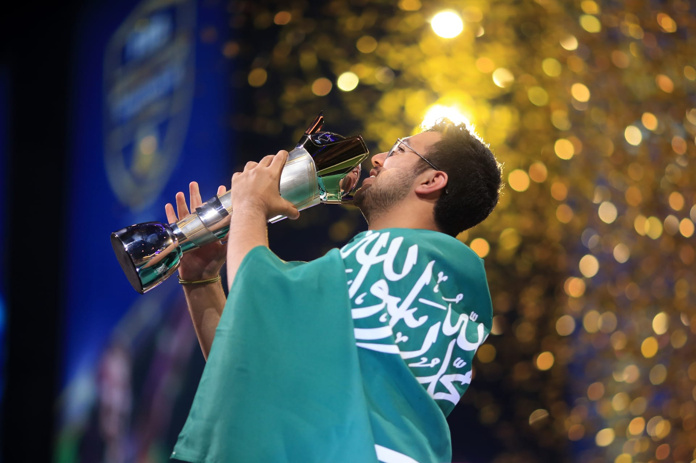

عن الرياضات الإلكترونية
الرياضات الإلكترونية في المملكة العربية السعودية شهدت نموًا ملحوظًا في السنوات الأخيرة، حيث أصبحت المملكة مركزًا إقليميًا وعالميًا لهذه الرياضات. تأسس الاتحاد السعودي للرياضات الإلكترونية في عام 2017 بهدف رعاية وتطوير مجتمع الألعاب والصناعة المرتبطة بها في المملكة.
أهداف الاتحاد السعودي للرياضات الإلكترونية
- تطوير صناعة الرياضات الإلكترونية في المملكة.
- تعزيز المشاركة في البطولات المحلية والدولية.
- دعم وتنمية المواهب الشابة في مجال الألعاب الإلكترونية.
- تعزيز الشراكات مع شركات عالمية لتطوير الرياضات الإلكترونية.
- الترويج للمملكة كمركز إقليمي للألعاب الإلكترونية.
إنجازات الاتحاد السعودي للرياضات الإلكترونية
- تنظيم بطولات محلية وعالمية مثل "لاعبون بلا حدود" و"موسم الجيمرز".
- استضافة أولمبياد الرياضات الإلكترونية 2025.
- تأهيل الأندية السعودية للمنافسات العالمية مثل نادي النصر ونادي الاتحاد.
- إطلاق الأكاديمية الوطنية للرياضات الإلكترونية.
- تنظيم بطولة "كأس السعودية" للألعاب الإلكترونية بالتعاون مع مؤسسات دولية.
- استضافة عدد من أكبر الأحداث العالمية مثل "بطولة FIFA 2024" و"PUBG Mobile World Championship".
- دعم المواهب الناشئة في مجالات الرياضات الإلكترونية والفيديو جيمز من خلال برامج تدريبية ومنح.
- تطوير شراكات استراتيجية مع شركات تكنولوجيا كبيرة مثل سوني ومايكروسوفت.


 
